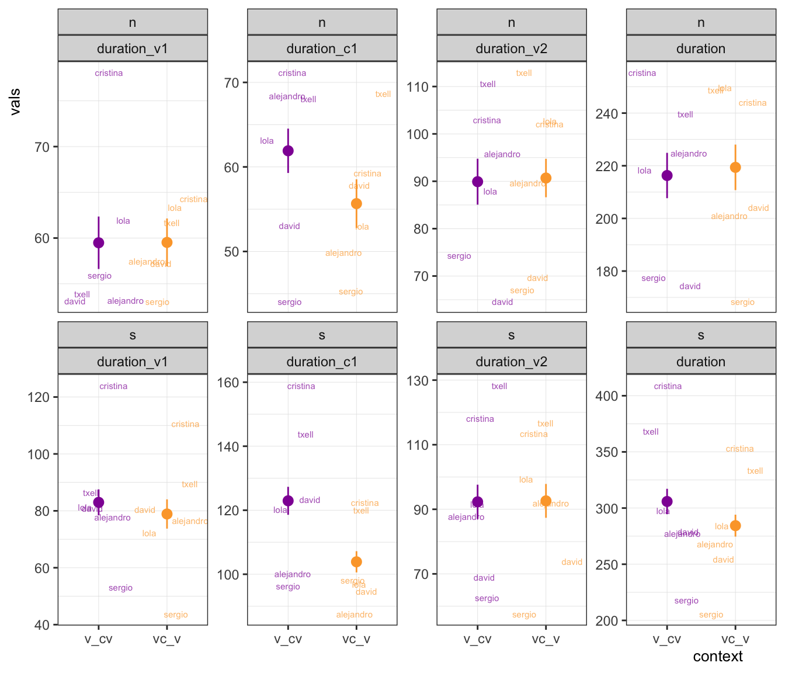

library("tidyverse")
library("here")
library("janitor")
library("speakr")Resyllabification stimuli assessment
# Path to script
stim_script <- here("scripts", "praat", "extractVals_stimuli.praat")
# Run script, capture output, read as csv
stim_data_raw <- praat_run(stim_script, capture = TRUE) %>%
read_csv(na = "--undefined--") %>%
write_csv(here("data", "raw", "stimuli_acoustics.csv"))v_cv <- c(
"la_salas", "busca_sobras", "era_sancho", "quiere_socio", "quiza_surja",
"tiene_sodio", "ve_sosos", "si_nego", "ve_nalgas", "ve_nanas", "ve_narcos",
"ve_naves"
)
phon_s <- c(
"la_salas", "las_alas", "buscas_obras", "busca_sobras", "era_sancho",
"eras_ancho", "quieres_ocio", "quiere_socio", "quizas_urja", "quiza_surja",
"tiene_sodio", "tienes_odio", "ves_osos", "ve_sosos"
)
simple_scale <- function(x) {
out <- (x - mean(x, na.rm = TRUE)) / sd(x, na.rm = TRUE)
return(out)
}
# Load raw data
stim_data_raw <- read_csv(here("data", "raw", "stimuli_acoustics.csv"))
stim_data <- stim_data_raw %>%
separate(filename, into = c("item1", "item2", "speaker"), sep = "_") %>%
unite(item, item1, item2, sep = "_") %>%
pivot_longer(
cols = f0_00:in_100,
names_to = c(".value", "time"),
names_sep = "_"
) %>%
transmute(item, speaker, duration_v1, duration_c1, duration_v2, duration,
f0_v1_mp, f0_v2_mp, in_v1_mp, in_c1_mp, in_v2_mp,
time = as.numeric(time), f0, intensity = `in`,
context = if_else(item %in% v_cv, "v_cv", "vc_v"),
phon = if_else(item %in% phon_s, "s", "n")) %>%
group_by(speaker) %>%
mutate(across(
.cols = c("f0_v1_mp", "f0_v2_mp", "in_v1_mp", "in_c1_mp", "in_v2_mp",
"f0", "intensity"),
.fns = log,
.names = "{.col}_log")
) %>%
group_by(speaker) %>%
mutate(across(
.cols = c("f0_v1_mp_log", "f0_v2_mp_log", "in_v1_mp_log", "in_c1_mp_log",
"in_v2_mp_log", "f0_log", "intensity_log"),
.fns = simple_scale,
.names = "{.col}_z")
) %>%
select(
speaker, item, context, phon,
duration_v1:duration_v2, duration,
f0_v1_mp:in_v2_mp,
f0_v1_mp_log:in_v2_mp_log,
f0_v1_mp_log_z:in_v2_mp_log_z,
everything()
) %>%
write_csv(here("data", "tidy", "stimuli_acoustics_tidy.csv"))Duration
# Load tidy data
stim_data <- read_csv(here("data", "tidy", "stimuli_acoustics_tidy.csv"))
# Duration plots
durs <- stim_data %>%
select(speaker:duration) %>%
distinct() %>%
pivot_longer(
cols = duration_v1:duration, names_to = "metric", values_to = "vals") %>%
mutate(vals = vals * 1000,
metric = fct_relevel(metric, "duration_v1", "duration_c1", "duration_v2"))
speaker_dur_means <- durs %>%
group_by(speaker, context, phon, metric) %>%
summarize(vals = mean(vals), .groups = "drop")
durs %>%
ggplot() +
aes(x = context, y = vals, color = context) +
facet_wrap(phon ~ metric, scales = "free_y", nrow = 2) +
geom_text(data = speaker_dur_means, aes(label = speaker), show.legend = F,
position = position_jitter(), alpha = 0.7, size = 2) +
stat_summary(fun.data = mean_se, geom = "pointrange", show.legend = F) +
scale_color_viridis_d(option = "C", begin = 0.3, end = 0.8) +
ds4ling::ds4ling_bw_theme()
Intensity
# intensity mp plot
int_point <- stim_data %>%
select(speaker:phon, starts_with("in_")) %>%
distinct() %>%
pivot_longer(
cols = in_v1_mp:in_v2_mp_log_z,
names_to = "metric", values_to = "vals") %>%
mutate(metric = fct_relevel(metric, "in_v1_mp", "in_c1_mp", "in_v2_mp",
"in_v1_mp_log_z", "in_c1_mp_log_z"))
speaker_int_means <- int_point %>%
filter(metric %in% c("in_v1_mp", "in_c1_mp", "in_v2_mp")) %>%
group_by(speaker, context, phon, metric) %>%
summarize(vals = mean(vals), .groups = "drop")
int_point %>%
filter(metric %in% c("in_v1_mp", "in_c1_mp", "in_v2_mp")) %>%
ggplot() +
aes(x = context, y = vals, color = context) +
facet_wrap(phon ~ metric, scales = "free_y", nrow = 2) +
geom_text(data = speaker_int_means, aes(label = speaker), show.legend = F,
position = position_jitter(), alpha = 0.7, size = 2) +
stat_summary(fun.data = mean_se, geom = "pointrange", show.legend = F) +
scale_color_viridis_d(option = "C", begin = 0.3, end = 0.8) +
ds4ling::ds4ling_bw_theme()# Intensity trajectory plot
stim_data %>%
filter(!is.na(intensity)) %>%
ggplot() +
aes(x = time, y = intensity) +
facet_wrap(~ phon, scales = "free_y") +
stat_summary(aes(color = context), fun = mean, geom = "line") +
stat_summary(aes(color = context), fun = mean_se, geom = "pointrange",
pch = 21, color = "white", size = 3) +
stat_summary(aes(fill = context), fun = mean, geom = "point", pch = 21,
color = "white", size = 3) +
scale_color_viridis_d(option = "C", begin = 0.3, end = 0.8) +
scale_fill_viridis_d(option = "C", begin = 0.3, end = 0.8) +
ds4ling::ds4ling_bw_theme()Pitch
# Pitch plot
stim_data %>%
filter(phon != "s", !is.na(f0),
f0_log_z <= 2 & f0_log_z >= -2) %>%
ggplot() +
aes(x = time, y = f0_log_z) +
#geom_point() +
stat_summary(aes(color = context), fun = mean, geom = "line") +
stat_summary(aes(color = context), fun = mean_se, geom = "pointrange",
pch = 21, color = "white", size = 3) +
stat_summary(aes(fill = context), fun = mean, geom = "point", pch = 21,
color = "white", size = 3) +
scale_color_viridis_d(option = "C", begin = 0.3, end = 0.8) +
scale_fill_viridis_d(option = "C", begin = 0.3, end = 0.8) +
ds4ling::ds4ling_bw_theme()